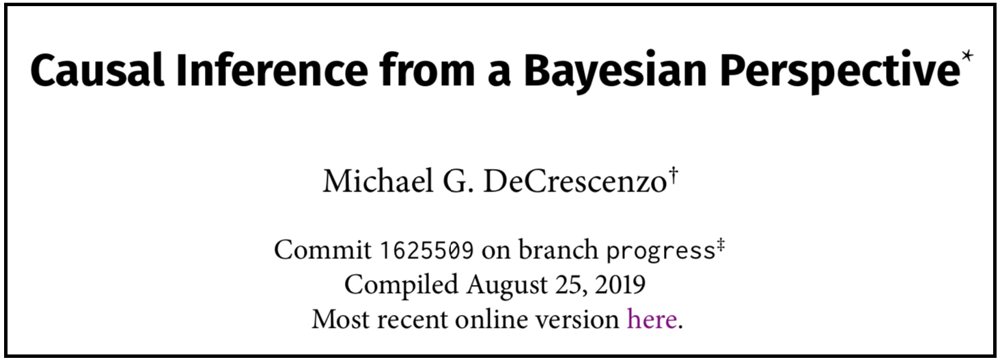

Motivation
One benefit of open-source research is that it is possible to trace the history of a research product through its (potentially many) iterations using a versioning system such as Git. This is great for readers who encounter the project’s remote repository, but it’s more likely the case that readers will encounter only a PDF of your paper in an email or through a preprint archive. While services like ArXiv will watermark your paper, it (or so it seems) only includes information about the paper’s history in ArXiv specifically, rather its history in your Git repository. This post describes how you can use Rmarkdown to include Git information into a working draft of your research paper.
What exactly do I mean? Your paper typically includes the date of compilation, but you could also include the current commit hash, the branch of the current commit, and so on. Why would you want to do this?
- A compilation system like \(\mathrm{\LaTeX}\) can print the date of compilation, but it is often the case that documents are re-compiled without any real changes. This means the compilation date can be a deceiving signal about when the paper was most recently modified. You may want to “timestamp” a version of your paper in a way that is robust to re-compilation at an arbitrary future time.
- As you develop your paper locally, you may commit several small changes between major versions of your paper. To prevent your “in-development” copy from being confused for a major version of the paper, you may want to note which commit generated the current PDF and perhaps link to a more stable “for public eyes” version of the paper elsewhere.
- A more general case of the previous point: suppose you develop your project across multiple branches (e.g. as with “Git flow”). You may reserve your “master” branch for major versions of the project while iteratively developing the project (and compiling the document) on a non-master branch. In this case, you might want to know if a PDF was compiled from source code on the master branch (i.e. “Am I looking at a major version of the paper”) or on an in-development branch.
Here is an example from one of my in-progress papers.

This setup prioritizes the commit hash over the compilation date as a method for “dating” your paper. The branch name is included in cases where the PDF is generated on a development branch instead of on the master/public branch. The footnote corresponding to the commit information contains the commit message (not shown). And lastly, the link to the public version takes you to the master branch PDF on Github—the most recent major version.
How to do it
Setting this up consists of essentially two steps:
- Learn to print Git commands to the console using R.
- Place that R code in your
.Rmddocument’s YAML header.
Console commands with R
We can run console commands within R using the system() function. Ordinarily the results of the commands merely print to the console instead of being treated as objects, but we want to make these objects be accessible in the R environment using the intern = TRUE argument.
Here are some examples that will display Git information for my website repo (where this code is currently being evaluated).
For instance, how can we print the branch name?
system("git symbolic-ref --short HEAD", intern = TRUE)## [1] "master"To print only the hashes in your Git log, you can supply %t to the the --pretty argument of git log.
system("git log --pretty=%t", intern = TRUE)## [1] "c5fcaa0" "d3b381a" "ad7ee18" "c5fcaa0" "533e975" "2e7c7a8" "eaee307"
## [8] "43bfc74" "1856a0b" "5823e01" "66e52d7" "0f043a4" "af6087c" "56bc096"
## [15] "ebd98df" "3074778" "94bcada" "fa8f4fa" "1079fd7" "1a3553b" "f352285"
## [22] "0e7c4b4" "3be8c27" "2a80372" "950065a" "b8d24f2" "9da4ece" "8cccbf9"
## [29] "45d0315" "9d26ba5" "6ebb3b0" "af8a617" "2c6ec85" "22fea55" "3854af2"
## [36] "93d13c4" "b297079" "f8b6836" "d988f5c" "6fc4555" "eabf878" "d6bf55f"
## [43] "ecc0c17" "322d6d8" "b204b83" "604a055" "5b6cd16" "7f3d4e8" "3e3d9d1"
## [50] "c5c2a6b" "72ecc5a" "bd25ad7" "2820840" "f8be89c" "5011495" "b4f159a"
## [57] "471d45e" "32e03b8" "d55b641" "175df3e" "03985bd" "549e2f0" "8effeb6"
## [64] "e7c1fc3" "19f3bcd" "0647521" "5913357" "b146ac2" "494f860" "557bf2a"
## [71] "2b367c7" "734e099" "8ef25d4" "1d949ce" "ed14db3" "ba4694c" "57d5fc6"
## [78] "1656482" "28d68d7" "5b8e92a" "a807aab" "359f06a" "78c3ee3" "defc14f"
## [85] "ec7e081" "e4c9176" "ab502db" "7fe3ee6" "2f97534" "3259f27" "bec13bd"
## [92] "f3142cc" "2959bf6" "b4754c2" "91fe96a" "91bba9b" "071d153" "8e4cce3"
## [99] "ba09b95" "741632b" "3569cdc" "d99c163" "5c135e3" "2671a4b" "2b7d810"
## [106] "ea7d44d" "6c7656c" "e40d5d8" "bb9199d" "ca4e593" "c42c33f" "d17291e"
## [113] "38d1910" "6bc2299" "3131d9d" "5906234" "d355f02" "7a6e215" "c5befba"
## [120] "b0dba1c" "c1d6342" "87f3ceb" "83ca75b" "69e41cf" "f9278c7" "a3ee86e"
## [127] "816ebb5" "030278d" "2d9384b" "fec8391" "83dbb8c" "1210553" "ce35ec0"
## [134] "ab3c776" "c62ad9f" "3148687" "c3621d8" "943687e"Use indexing to isolate only the most recent hash from this vector of results.
system("git log --pretty=%t", intern = TRUE)[1]## [1] "c5fcaa0"To print the commit message, use --pretty=%s instead.
system("git log --pretty=%s", intern = TRUE)[1]## [1] "JK the kathy notes mess up all site styling"R results in the YAML
Now that we know which commands to run to get the Git info, how do we get this information into our YAML? We will do this using inline R code chunks. This code block shows what I’ve done for the above paper example, and I describe a few of the tricks I use below.
date: |
| Commit \texttt{`r system("git log --pretty=%t", intern = TRUE)[1]`} on branch \texttt{`r system("git symbolic-ref --short HEAD", intern = TRUE)`}\footnote{Commit message: \texttt{`r system("git log --pretty=%s", intern = TRUE)[1]`}}
| Compiled `r format(Sys.time(), '%B %d, %Y')`
| Most recent online version [here](https://github.com/mikedecr/causal-bayes/blob/master/writing/causal-bayes-paper.pdf).- We use the
datevariable, but we supply multiple lines of content. To do this, place a pipe|after declaring thedatevariable, and begin each line with a new pipe|. This will line-break the content in your compiled PDF and let you supply \(\mathrm{\LaTeX}\) code directly to the variable. - To use teletype/fixed-width font, type the
\texttt{}command for \(\mathrm{\LaTeX}\) directly in Rmarkdown. - We can evaluate and print the results of inline R code by including the letter
rat the beginning of an inline code chunk (delimited by backticks). This code is evaluated before the document is compiled, so the information being passed to\texttt{}is the results of the R code rather than the text of the R code itself. - Do the same basic setup for the commit hash, commit message (in a footnote), and the compilation date. Note that the formatting of the compilation date gives you prettier results than the Rmarkdown default.
- Lastly, you can link the reader to the most recent public PDF by linking to your remote master branch. By linking directly to Github (or wherever else you host the remote repository), any time you push an update to remote, your PDF will automatically be up to date. This will be true of any offline PDF, any previous PDF, and any PDF generated on any branch. This is because the URL to your master branch PDF will not change even if the PDF file itself changes!
Caveat
When you push to Github, it creates new hashes that differ from your local machine. As a result, you can’t use the hash in the PDF to cross-reference the same hash on Github. This is a shortcoming of the approach, and if I think of a feasible way around it, I will update this post or write a new post altogether.